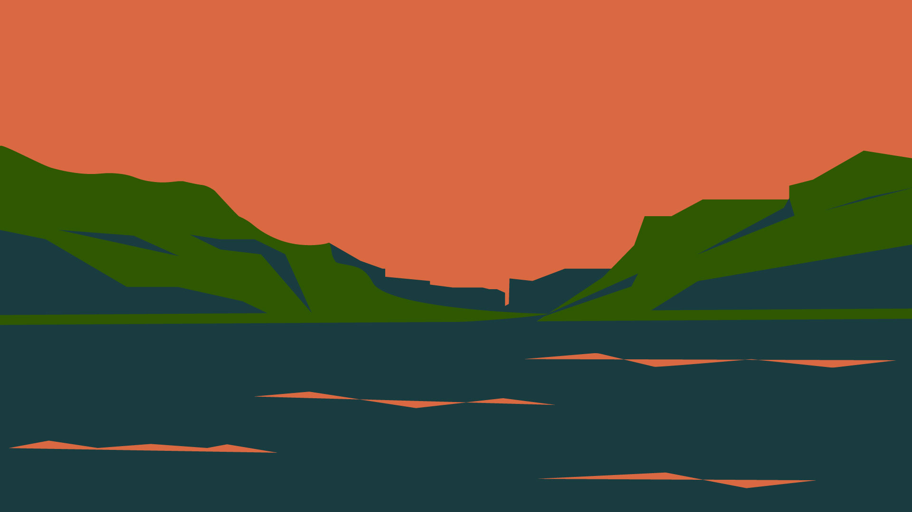

I love hiking, so I chose this picture to illustrated to see another of perspective of mountain scenary in 3 colors which was very fun! I got to explore how to choose the color to contrast each other.
Even though the sky in the original is blue but I change to Orange color which make this illustrated photo became more earthy and warm tone like captured during sunset time.